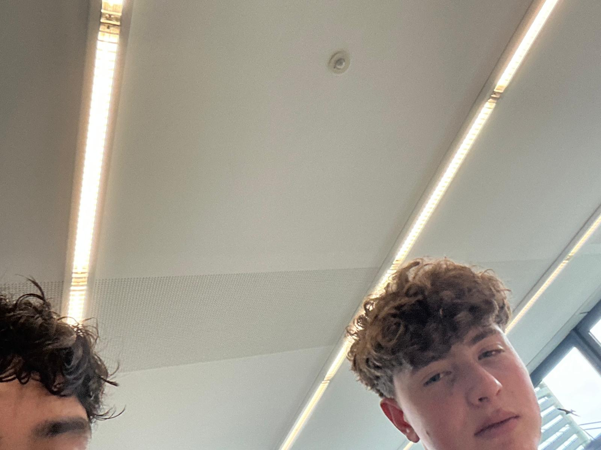

Quirin war hier
Hallo Quirin
Bedeutung und Herkunft Der Name leitet sich vom lateinischen Quirinus ab. Die Bedeutungen reichen historisch zurück: "Der Speerträger": Abgeleitet vom sabinischen Wort quiris für Speer. "Der Kriegerische": Bezieht sich auf Quirinus, einen alten römischen Kriegsgott, der später mit dem Stadtgründer Romulus gleichgesetzt wurde. "Der Mann aus der Stadt der Speere": Bezieht sich auf die sabinische Stadt Cures.

4. Juni: Gedenktag für den heiligen Quirinus von Tegernsee (Märtyrer).